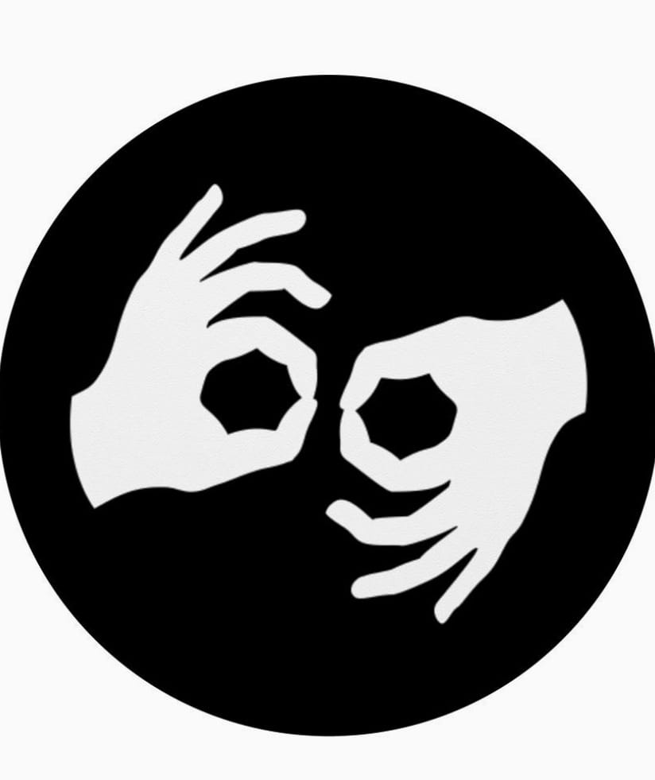

Gracias a las organizaciones maestro/as, asistentes de maestro/as, madres, padres y encargados
que a diario sirven a las personas con impedimentos,igualando participacion ,
acceso y calidad de vida. Gracias por permitir a AC3 colaborar y aprender de ustedes!
Es el mas grande honor!
Bienvenidos a la iniciativa Ciencia con todos los sentidos. Que es esta iniciativa?
Esta iniciativa intenta ayudar a maestro/as de ciencia maestro/as de educacion especial, asistentes de estudiantes de educacion especial , estudiantes y sus encargado/as en sus enormes iniciativas para hacer la ciencia accesible a todo/as estudiantes!
Intentaremos crear un laboratorio experiencial, que utiliza métodos multi- sensoriales con base científica ( i.e iniciaremos con tacto, vibracion, sonido y visual)
para mejorar destrezas de aprendizaje en la ciencia.